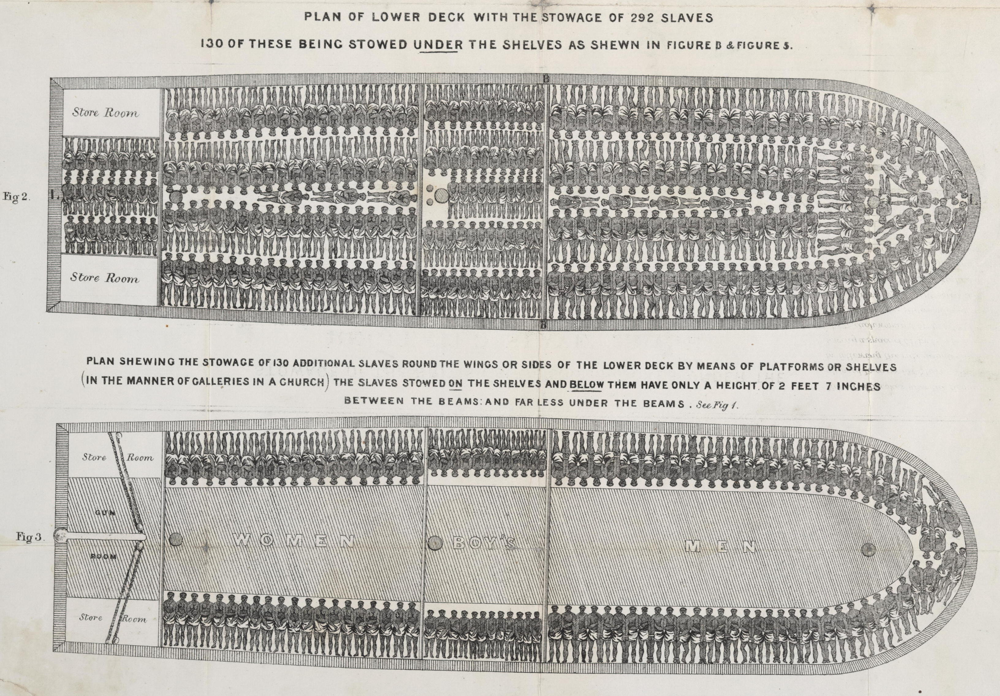
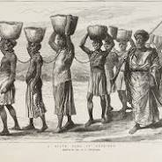
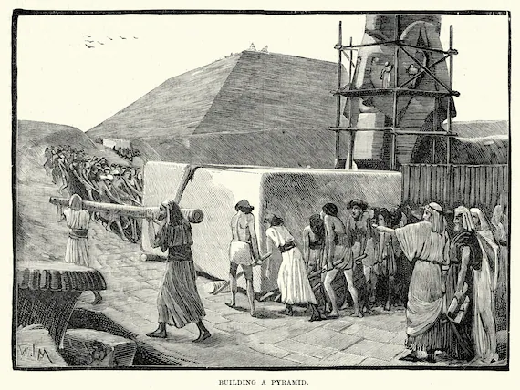
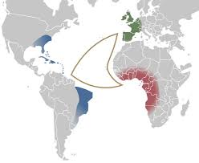

LA TRATTA DEGLI SCHIAVI
La tratta degli schiavi africani, nota anche come tratta atlantica, rappresenta uno dei capitoli più bui della storia umana, caratterizzato da enormi sofferenze e ingiustizie. Questo fenomeno si è sviluppato tra il XV e il XIX secolo, coinvolgendo milioni di africani strappati dalle loro terre e venduti come schiavi nelle Americhe.
Numero di Schiavi
Si stima che tra 9,4 e 12 milioni di schiavi africani siano stati trasportati attraverso l'Atlantico. Altre fonti suggeriscono che il numero possa variare tra 7 e 15 milioni, a seconda delle metodologie di stima utilizzate La maggior parte di questi schiavi proveniva da regioni dell'Africa occidentale e centrale, con i portoghesi e i brasiliani responsabili della deportazione di quasi la metà degli schiavi.
Condizioni di Viaggio
Durante il viaggio verso le Americhe, noto come "Middle Passage", gli schiavi africani affrontavano condizioni estremamente disumane e brutali. Questo tragitto, che durava da due a sei mesi, era caratterizzato da un sovraffollamento estremo, dove centinaia di prigionieri venivano ammassati in spazi angusti e privi di ventilazione, spesso sottocoperta e incatenati l'uno all'altro.
Resistenza e disperazione
- Resistenza e ribellione: Nonostante le terribili condizioni, molti schiavi tentavano di resistere o organizzare ribellioni. Le insurrezioni erano comuni, anche se spesso soffocate con violenza dai marinai.
- Suicidio: La disperazione portava molti schiavi a scegliere la morte piuttosto che la vita in schiavitù. Suicidi attraverso il rifiuto del cibo o gettandosi in mare erano frequenti. Ottobah Cugoano, un ex schiavo, descrisse come la morte fosse preferibile alla vita in cattività.
- Depressione e apatia: La perdita della libertà e della famiglia portava a stati di depressione profonda. Molti schiavi diventavano incapaci di mangiare o di mantenere una condizione fisica adeguata a causa della loro situazione.
Le testimonianze storiche mostrano che le condizioni disumane delle navi negriere non solo causavano sofferenza fisica, ma anche un profondo trauma psicologico tra gli schiavi, evidenziando la brutalità della tratta atlantica degli schiavi.

Principali cause della morte tra gli schiavi durante la traversata
Durante la traversata dell'Atlantico, nota come Middle Passage, gli schiavi affrontavano condizioni disumane che portavano a un alto tasso di mortalità. Le principali cause di morte tra gli schiavi durante questo viaggio erano:
Malattie
- Dissenteria: questa malattia intestinale era una delle principali cause di morte, spesso aggravata dalla scarsa igiene e dalla mancanza di cibo e acqua.
- Scorbuto: la mancanza di vitamina C, dovuta a una dieta insufficiente, portava a questa malattia, che era molto comune tra gli schiavi.
- Malattie infettive: Malaria, febbre gialla, vaiolo e morbillo erano altre malattie che decimavano il "carico umano" a bordo delle navi.
Condizioni di vita
- Malnutrizione: gli schiavi ricevevano razioni alimentari estremamente limitate (spesso solo fagioli, mais e riso) e poca acqua, contribuendo alla disidratazione e ad altre malattie.
- Sovraffollamento: le navi erano sovraffollate, con gli schiavi legati insieme in spazi ristretti, il che facilitava la diffusione delle malattie.
Stress psicologico
- Suicidi: molti schiavi, sopraffatti dalla disperazione e dalla perdita della libertà, si suicidavano rifiutando di mangiare o gettandosi in mare. Questo fenomeno era così comune che gli schiavisti adottavano misure per forzare gli schiavi a nutrirsi.
Violenza e abuso
- Violenza fisica e sessuale: le violenze perpetrate dai marinai e dai capitani contribuivano al trauma fisico e psicologico degli schiavi, aumentando la loro vulnerabilità alle malattie.


Arrivo in America
Al termine del viaggio, gli schiavi venivano venduti nei mercati americani, dove le famiglie venivano frequentemente separate. La vita che li attendeva era altrettanto dura, caratterizzata da lavoro forzato nelle piantagioni e ulteriori abusi fisici e psicologici.
Quali erano le principali rotte commerciali utilizzate per la tratta degli schiavi
Le principali rotte commerciali utilizzate per la tratta degli schiavi africani erano parte di un sistema noto come commercio triangolare, che collegava Europa, Africa e Americhe. Questo commercio si svolgeva in tre fasi distinte:

- Dall'Europa all'Africa: le navi partivano da porti europei come Liverpool, Bristol, Bordeaux e Amsterdam, cariche di merci destinate al commercio con i mercanti africani. Tra queste merci vi erano tessuti, armi da fuoco, rum e perline.
- Dall'Africa alle Americhe: una volta raggiunta la costa africana, le navi caricavano schiavi catturati o acquistati da mercanti locali. Questi schiavi venivano poi trasportati attraverso l'Oceano Atlantico verso le piantagioni delle Americhe, in particolare nelle Antille e nel Sud America.
- Dalle Americhe all'Europa: dopo aver venduto gli schiavi, le navi tornavano in Europa cariche di prodotti agricoli coltivati dagli schiavi, come zucchero, tabacco, cacao e cotone. Questi beni erano molto richiesti in Europa e contribuivano a sostenere l'economia dei paesi coinvolti nel commercio.
Questa rete commerciale non solo ha facilitato la tratta degli schiavi, ma ha anche avuto un impatto significativo sull'economia globale dell'epoca, creando ricchezze enormi per i mercanti europei e devastando le comunità africane.
Abolizione e Riflessioni
Il movimento abolizionista emerse nel XIX secolo, portando alla graduale abolizione della schiavitù in molte nazioni. Tuttavia, l'impatto della tratta degli schiavi continua ad essere un tema rilevante nella discussione sui diritti umani e sulle ingiustizie storiche. È fondamentale ricordare questo tragico capitolo della storia per promuovere giustizia e uguaglianza nel presente.
A cura di Samuele Panciatici